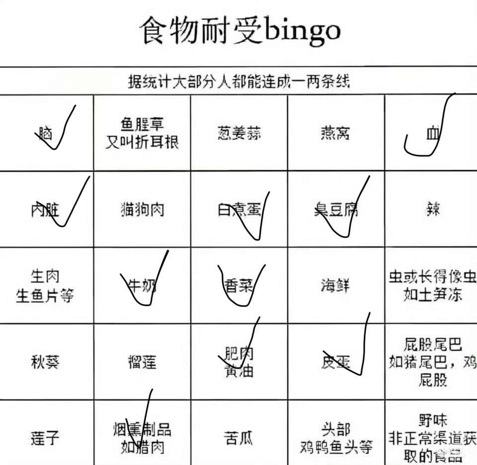
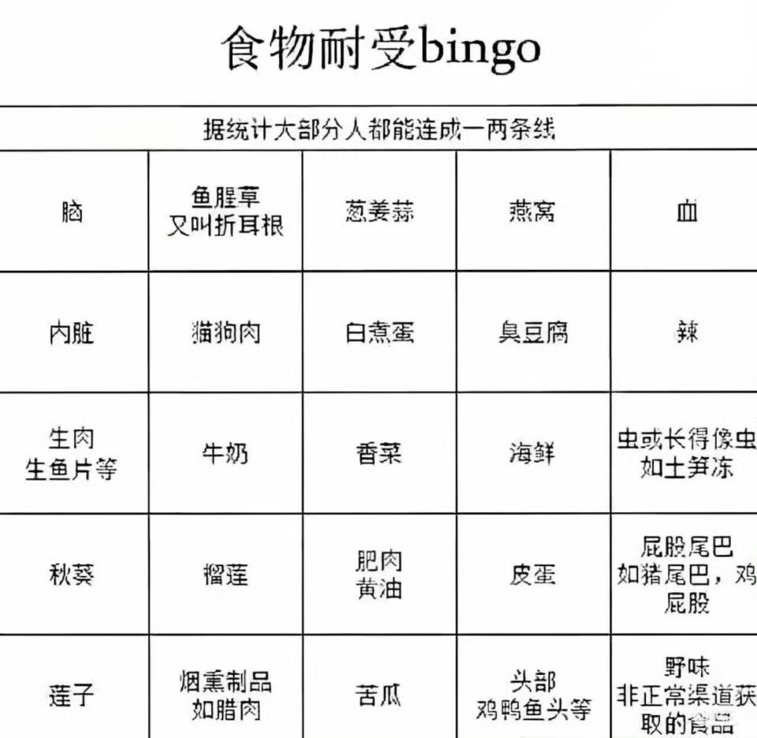

raincandy_U
@AmeAsukaLangley
刷了半天推发现忘记接着补充了所以补充一下，土笋冻我没看到过所以先入为主地不接受了，苦瓜很小的时候吃过之后再也没吃过，头部我接受不了，感觉好脏的样子，野味没吃过也不接受，屁股尾巴我觉得有点脏所以不接受嗯对


raincandy_U
@AmeAsukaLangley
但我真接受不了生肉，出去吃牛排也没点过九分熟以下的，秋葵一直感觉吃着味道和口感都很奇怪，莲子有试过但是感觉很苦，榴莲也不是很能接受，猫狗肉就更别说了，折耳根只见到过别人很喜欢吃，葱姜蒜里其实蒜我很喜欢但是无奈真心讨厌姜，燕窝没吃过但是感觉也挺奇怪的，然后我吃不了辣 https://t.co/HoBkj3VmsI